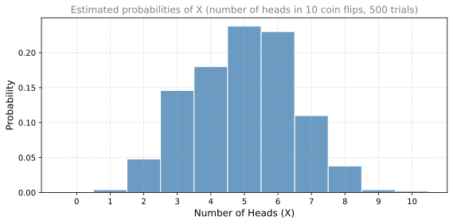

Random Variables
probability
What is a Random Variable?
You have seen variables before. In algebra, you may have learned that the variable \(x = 3\). It always has the same value. Random variables are different. They can take many values. For example, the temperature outside is a random variable that can take many values. Another random variable is the number of heads you obtain if you toss a coin 10 times.
A random variable is a variable whose value depends on the outcome of a random experiment. Instead of being fixed, it can take different values depending on what happens.
From Experiments to Random Variables
Let us go back to the coin flipping experiment. When you flip a coin, you can obtain heads or tails, each with a probability of \(\frac{1}{2}\).
Now, let us define a variable \(X\) as the number of heads. What happens when you flip a coin?
- If you obtain heads, then \(X = 1\) (you got 1 heads).
- If you obtain tails, then \(X = 0\) (you got 0 heads).
The probabilities are:
\[ P(X = 1) = 0.5 \qquad P(X = 0) = 0.5 \]
\(X\) is called a random variable. You can think of it as a variable that does not always have the same value. Roughly half of the time it takes a value of 1 and half of the time it takes a value of 0.
Random Variable with 10 Coin Tosses
Now let us look at a more interesting random variable. Let \(X\) be the number of heads we obtain in 10 coin tosses, with \(P(\text{heads}) = 0.5\).
Consider some specific outcomes:
- All 10 are heads: \(X = 10\)
- One is tails, nine are heads: \(X = 9\)
- And so on, down to all tails: \(X = 0\)
What are the probabilities of specific sequences? Since all tosses are independent and each has probability \(\frac{1}{2}\):
\[ P(\text{HHHHHHHHHH}) = \left(\frac{1}{2}\right)^{10} \]
A sequence with 9 heads and 1 tail also has probability \(\left(\frac{1}{2}\right)^{10}\), because we can write it as \(\left(\frac{1}{2}\right)^9\) for the heads and \(\frac{1}{2}\) for the tail.
However, there is a harder problem. What is \(P(X = 9)\)? This is different from the probability of one specific sequence. \(P(X = 9)\) groups together all the different ways to obtain exactly 9 heads and 1 tail. There are 10 positions where the single tail can appear, so there are 10 such sequences.
Similarly, \(P(X = 0)\) asks for the probability of obtaining 0 heads total (all tails), which is only one specific sequence: \(\left(\frac{1}{2}\right)^{10}\).
Simulating the Experiment
To get a feel for these probabilities, we can run the experiment many times. Suppose we flip 10 coins and record the number of heads. We do this 500 times and plot a histogram of the results.
The possible outcomes range from 0 to 10, because you can obtain anywhere from 0 heads to 10 heads. With \(P(\text{heads}) = 0.5\), the histogram looks roughly like a bell shape:
- \(P(X = 0)\) and \(P(X = 10)\) are the smallest, because it is unlikely to obtain all heads or all tails.
- \(P(X = 5)\) is the highest, because getting roughly half heads and half tails is the most likely outcome.
- Values like \(P(X = 8)\) (8 heads and 2 tails) fall somewhere in between.
NoteEmpirical vs. Theoretical Probability
The bars above show empirical probabilities, estimated from 500 simulated trials. They are close to the true (theoretical) probabilities, but not exact. If we ran more trials (say 10,000), the bars would get even closer to the true values. In a later section, we will learn the exact formula (the binomial distribution) to compute these probabilities precisely without any simulation.
Why Random Variables Matter
Random variables allow us to model an entire experiment at once. Most problems in probability can be expressed using random variables. Here are some examples:
- Flip a bunch of coins and let \(X\) be the number of heads.
- Roll a bunch of dice and let \(X\) be the number of times you obtain a 1.
- See a bunch of patients and let \(X\) be the number of sick patients.
You can also define random variables freely. For example, let us define a random variable \(X\) that takes:
- Value 1 with probability 0.5
- Value \(-7\) with probability 0.2
- Value 3.14159 with probability 0.3
You can come up with any random variable you want that takes any values. As long as the probabilities add to 1, the definition is valid.
Discrete vs. Continuous Random Variables
You may notice that different random variables behave in different ways. That is because there are two big types: discrete and continuous random variables.
Discrete random variables are the ones we have been seeing so far:
- The number of 1s or 6s if you roll dice
- The number of heads if you flip coins
- The number of kids in a specific group with a particular height
Continuous random variables can take values in an entire interval:
- The amount of time until the next bus arrives
- The height of a gymnast’s jump
- The number of millimeters of rain in a particular month
What Makes Them Different?
At first glance, it seems like discrete variables can only take a finite number of values (0 through 10 for 10 coin flips) and continuous ones can take an infinite number (time could be 1 minute, 1.01 minutes, 1.001 minutes, etc.).
But this is not quite right. Discrete random variables can also take an infinite number of values. For example, if you keep flipping a coin until you obtain heads, you could flip it 1 time, 2 times, 3 times, 500 times, or even a million times. The probability gets very small, but the range of values is infinite.
The real distinction is:
- Discrete random variables take a countable number of values. The possible values can be put in a list: 1, 2, 3, 4, 5, and so on.
- Continuous random variables take values on an entire interval. The possible values cannot be put in a list because they fill a continuous range.
Deterministic vs. Random Variables
You may be thinking about how these random variables differ from the ones in algebra and calculus. The difference is that the variables in algebra and calculus are deterministic and the ones here are random.
A deterministic variable, like \(x = 2\) or the input of the function \(f(x) = x^2\), always takes the same value once it is defined. It is fixed forever.
A random variable, on the other hand, can take many values. It is associated with an uncertain outcome. Each time you run the experiment, you might get a different result.
| Deterministic Variable | Random Variable | |
|---|---|---|
| Value | Fixed | Uncertain |
| Example | \(x = 2\) | \(X\) = number of heads in 10 flips |
| Outcome | Same every time | Different each time |
Review Questions
1. Drag each term to its correct definition.
TipAnswer
- Experiment → Any process that produces an uncertain outcome (flipping a coin, rolling a die).
- Sample Space → The set of all possible outcomes of an experiment (100% of what could happen).
- Event → A subset of the sample space containing the favorable outcomes we are interested in.
- Random Variable → A variable that assigns a number to each outcome, its value depends on a random experiment.
2. What is the difference between a deterministic variable and a random variable?
TipAnswer
A deterministic variable always takes the same fixed value once defined (for example, \(x = 2\)). A random variable is associated with an uncertain outcome and can take different values each time the experiment is performed.
3. You flip a fair coin 10 times and define \(X\) as the number of heads. What are the possible values that \(X\) can take?
TipAnswer
\(X\) can take any integer value from 0 to 10 (inclusive). You could get 0 heads (all tails), 1 head, 2 heads, all the way up to 10 heads (all heads).
4. A random variable \(X\) takes value 4 with probability 0.3, value 7 with probability 0.5, and value 10 with probability 0.1. Is this a valid random variable? Why or why not?
TipAnswer
No, this is not a valid random variable because the probabilities do not add to 1. We have \(0.3 + 0.5 + 0.1 = 0.9\), which is less than 1. For a valid random variable, the probabilities of all possible outcomes must sum to exactly 1.
5. Is “the number of times you roll a die until you get a 6” a discrete or continuous random variable? Can it take infinitely many values?
TipAnswer
It is a discrete random variable. Yes, it can take infinitely many values (1, 2, 3, 4, …) because in theory you could keep rolling without getting a 6 for a very long time. However, the values are countable (they can be listed: 1, 2, 3, …), so it remains discrete.
6. Give an example of a continuous random variable and explain why it cannot be listed.
TipAnswer
The time you wait for the next bus is a continuous random variable. It cannot be listed because it can take any value in an interval, such as 2.5 minutes, 2.51 minutes, 2.501 minutes, and so on. Between any two possible values, there are infinitely many more values, so they fill a continuous range rather than forming a countable list.
7. Which of the following are examples of continuous random variables? Select all that apply: (a) Time taken to run a 100-meter race, (b) Number of goals scored in a soccer match, (c) Weight of a package, (d) Number of cars passing through a toll booth in an hour, (e) Height of students in a class, (f) Temperature in degrees Celsius, (g) Number of students in a classroom.
TipAnswer
The continuous random variables are (a) time taken to run a race, (c) weight of a package, (e) height of students, and (f) temperature. These can take any value in a range (e.g., 10.37 seconds, 2.451 kg, 172.3 cm, 21.7 degrees). The discrete variables are (b) number of goals, (d) number of cars, and (g) number of students, because they can only take whole-number (countable) values.